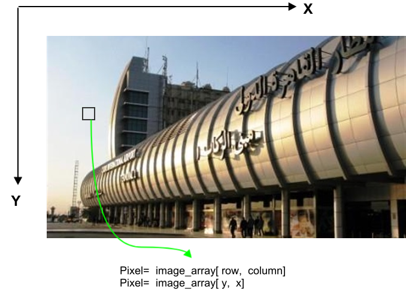

Week 1: Image Processing 1
- Images as Arrays
- Mean and Variance
- Profiles
- Edges
- Computer Vision Opportunities
- Resources
- Week 1: Demo and Lab Source Files
Images as Arrays

RGB Images
For RGB images, each pixel is composed of three channels, namely: red, green, and blue.

Binary Images and Scaler Images
- A pixel in a binary image is either 0 or 1.
- A pixel in a scaler image is composed of a single channel with scaler value.
- Example: 256-grayscale images.
Converting from RGB to Grayscale
For each RGB pixel, we compute a combination of the three values into single value. In literature, using a combination of is extensively used.
def rgb2gray(rgb_image):
return np.dot(rgb_image[...,:3], [0.299, 0.587, 0.114])

Converting from Grayscale to Binary Image
We can binarize an image by using a threshold value, such that pixel value is 1 if and 0 otherwise.
def binarize( gray_image , threshold ):
threshold = np.max( gray_image ) * threshold
return 1 * ( gray_image > threshold )

Mean and Variance
print( np.mean( image ))
print( np.std( image ))
Profiles
x0 = 0
x1 = gray_image.shape[0] - 1
y0 = 0
y1 = gray_image.shape[1] - 1
x, y = np.linspace(x0, x1, 300), np.linspace(y0, y1, 300)
profile = gray_image[x.astype(np.int), y.astype(np.int)]
#-- Plot...
fig, axes = plt.subplots(nrows=2)
axes[0].imshow(gray_image)
axes[0].plot([x0, x1], [y0, y1], 'ro-')
axes[0].axis('image')
axes[1].plot(profile)
plt.show()

Edges
In images, we are always interested to define the boundaries of objects existing in an image, and separating it from background. Edge detection is fundamental step in many Computer Vision pipelines. The simplest form of edge detection is applying mathematical differentiation on image data. Since we work with digital pixels, we will apply difference equations.
First-Order Derivatives
where:
is the derivative with respect to x (gradient in the x direction)
is the derivative with respect to y (gradient in the y direction).

Computer Vision Opportunities
Internship at Affectiva
📢⁉️ Calling all interns! Looking for a #Boston –based #engineering #internship? We are offering exciting opportunities in 2019, see all our openings here! https://t.co/iMdBXzMcfz
— Rana el Kaliouby (@kaliouby) January 23, 2019
A very interesting talk by Rana Elkaliouby about Affectiva:
360imaging in Egypt

An intuitive and easy to use treatment planning software for accurate and predictable planning of implant cases.
- Planned Dental Surgeries.
- They demand highly skilled C++ developers.
- Computer Vision background is a plus
- They offer opportunities through Wuzzuf.
Resources
- Awsome Computer Vision, +5K starts.
- Awesome Machine Learning, 30K starts.
- Stanford Machine Learning Group
Week 1: Demo and Lab Source Files
$ git clone https://github.com/sbme-tutorials/sbe401-week2-demo.git